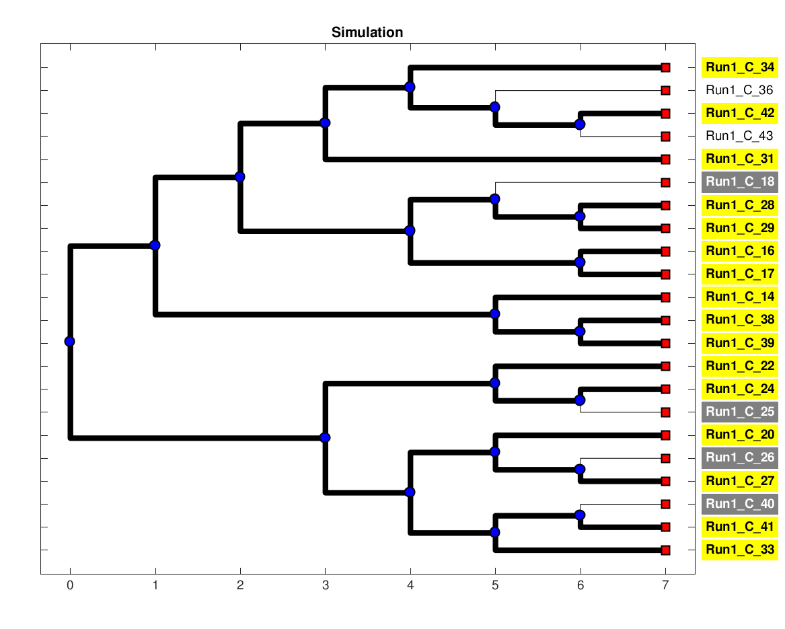
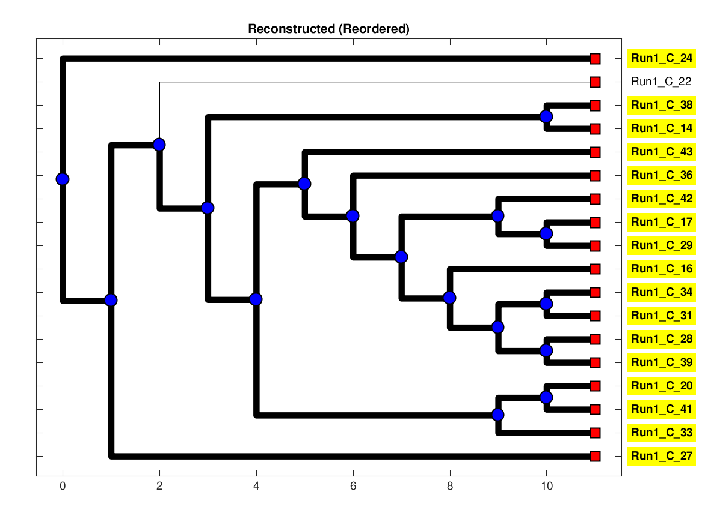

| Simulation Seed: | 875887 |
| Simulation Time: | 3 |
| Number of Microsatellite Loci: | 10 |
| Mutation: | True |
| Allelic Dropouts: | True |
| Noises: | True |
| Early Stop Population: | 0 |
| names | C_14 | C_16 | C_17 | C_18 | C_20 | C_22 | C_24 | C_25 | C_26 | C_27 | C_28 | C_29 | C_31 | C_33 | C_34 | C_36 | C_38 | C_39 | C_40 | C_41 | C_42 | C_43 | root |
| LOC_1 | NaN | 19 | 19 | NaN | 21 | 19 | 19 | NaN | NaN | NaN | NaN | 19 | 19 | 20 | 19 | NaN | NaN | NaN | NaN | NaN | 19 | 20 | 19 |
| LOC_2 | NaN | 25 | 21 | NaN | 22 | NaN | 20 | NaN | NaN | NaN | NaN | 21 | NaN | 21 | 24 | NaN | 23 | NaN | NaN | 22 | 24 | NaN | 20 |
| LOC_3 | 8 | 8 | 8 | NaN | 7 | NaN | 7 | NaN | NaN | NaN | 8 | 8 | 8 | 7 | 8 | 8 | NaN | 8 | NaN | 7 | 8 | 8 | 7 |
| LOC_4 | NaN | 7 | 7 | NaN | 7 | 7 | 7 | NaN | NaN | 7 | NaN | NaN | NaN | 7 | 7 | 7 | NaN | 7 | NaN | 7 | 7 | NaN | 7 |
| LOC_5 | 7 | 7 | 9 | NaN | 7 | 7 | 7 | NaN | NaN | NaN | 7 | NaN | 7 | 7 | 7 | NaN | NaN | 7 | NaN | 7 | 8 | NaN | 7 |
| LOC_6 | 18 | NaN | NaN | NaN | NaN | NaN | NaN | NaN | NaN | NaN | NaN | NaN | 21 | NaN | NaN | NaN | NaN | NaN | NaN | NaN | NaN | NaN | 16 |
| LOC_7 | NaN | NaN | 13 | NaN | 15 | NaN | NaN | NaN | NaN | NaN | 13 | 13 | 14 | 14 | 14 | 15 | NaN | 13 | NaN | 14 | NaN | NaN | 13 |
| LOC_8 | 20 | 19 | 19 | NaN | NaN | 22 | NaN | NaN | NaN | 21 | 19 | 19 | 19 | NaN | NaN | 19 | 20 | NaN | NaN | 22 | NaN | NaN | 22 |
| LOC_9 | 14 | NaN | NaN | NaN | NaN | NaN | NaN | NaN | NaN | NaN | 15 | 14 | 15 | 15 | 15 | NaN | NaN | 15 | NaN | 15 | 14 | NaN | 15 |
| LOC_10 | NaN | NaN | NaN | NaN | NaN | NaN | NaN | NaN | NaN | NaN | NaN | NaN | NaN | NaN | NaN | NaN | NaN | NaN | NaN | NaN | NaN | NaN | 17 |
|  |  |
'
|
0.6603 |
/-Run1_C_22
/-|
| | /-Run1_C_24
| \-|
| \-Run1_C_25
/-|
| | /-Run1_C_20
| | /-|
| | | | /-Run1_C_26
| | | \-|
| \-| \-Run1_C_27
| |
| | /-Run1_C_33
| \-|
| | /-Run1_C_40
--| \-|
| \-Run1_C_41
|
| /-Run1_C_14
| /-|
| | | /-Run1_C_38
| | \-|
| | \-Run1_C_39
| |
| | /-Run1_C_31
\-| /-|
| | | /-Run1_C_34
| | \-|
| | | /-Run1_C_36
| | \-|
| | | /-Run1_C_42
\-| \-|
| \-Run1_C_43
|
| /-Run1_C_16
| /-|
| | \-Run1_C_17
\-|
| /-Run1_C_18
\-|
| /-Run1_C_28
\-|
\-Run1_C_29
|
/-Run1_C_22
|
|--Run1_C_27
|
|--Run1_C_24
--|
| /-Run1_C_38
| /-|
| | \-Run1_C_14
| |
\-| /-Run1_C_20
| /-|
| | \-Run1_C_41
\-|
| /-Run1_C_43
| |
\-| /-Run1_C_33
| |
\-| /-Run1_C_36
| |
| | /-Run1_C_42
\-| /-|
| | | /-Run1_C_17
| | \-|
| | \-Run1_C_29
\-|
| /-Run1_C_16
| |
| | /-Run1_C_34
\-|--|
| \-Run1_C_31
|
| /-Run1_C_28
\-|
\-Run1_C_39
|